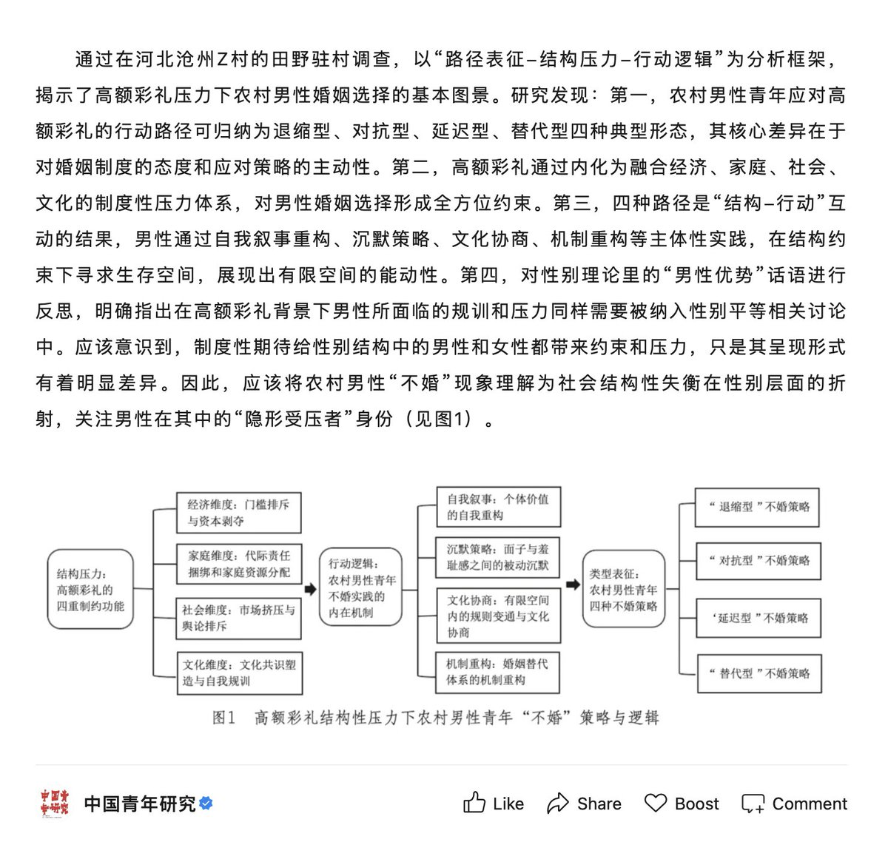

amber水母🍥
@amber_medusozoa
我的困惑是男方作为「受压者」的身份命名，仅仅在你把结婚理解为一种必须要满足的社会规范的情况下才是成立的，这样一来最后那四种策略才可以被理解为应对某种形式的剥夺的证明；但如果你一开始就把不婚理解为正当的选择，那高额彩礼又能影响到谁呢，这不就是反抗压力的一种正当进路了吗

amber水母🍥
@amber_medusozoa
这个写得挺好的，但我还是不理解为什么不结婚会被预设为一个需要被解决的问题，这种制度期待就不构成压力的一部分了吗 https://t.co/EXN1Kw7uDi https://t.co/HNxLJq4d6f